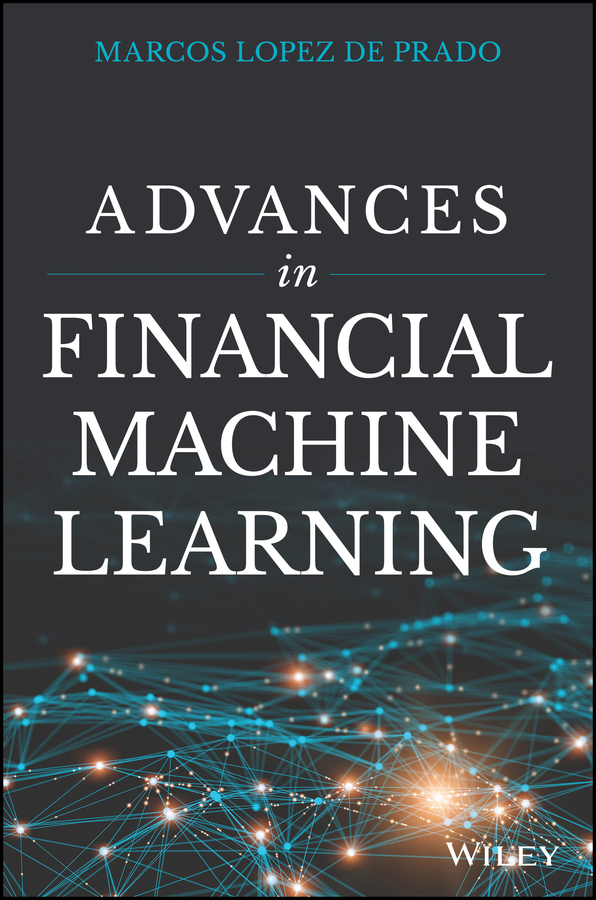

前置页

《金融机器学习进阶》推荐语 在新作《金融机器学习进阶》中，著名金融学者马科斯·洛佩斯·德普拉多（Marcos López de Prado）对当今金融界随处可见的幼稚方法和统计过拟合手法予以迎头痛击。他指出，金融业沿用已久的常规做法在今天的高科技金融环境中不仅大多无效，许多时候甚至会导致亏损。但洛佩斯·德普拉多并不止于揭露金融界在数学和统计上的种种错误，还为金融专业人士拥抱机器学习浪潮提供了一条技术上可靠的路线。尤其难得的是，作者坚持实证导向：关注真实世界的数据分析，而不是那些纸面上看似漂亮、实际却往往收效甚微的纯理论方法。本书主要面向已经熟悉统计数据分析技术的金融从业者；对于希望在这一领域开展真正前沿工作的读者，投入时间研读本书完全值得。——戴维·H·贝利（David H. Bailey）博士，劳伦斯伯克利国家实验室前复杂系统负责人，BBP spigot 算法共同发现者
“金融已经从一套基于历史财务报表的经验法则，发展为一门高度精密的科学学科，依靠计算机集群实时分析海量数据流。机器学习（ML）近年来取得的瞩目进展，用到现代金融中既带来希望，也暗藏风险。金融问题具有机器学习擅长处理的非线性关系和大型数据集，同时也充斥噪声，并涉及目前标准机器学习技术尚难覆盖的人为因素。犯错是人之常情；但如果真想把事情彻底搞砸，就交给计算机吧。在这样的背景下，洛佩斯·德普拉多博士写出了第一部全面介绍现代机器学习如何用于金融建模的著作。本书把机器学习的最新技术进展与作者数十年来在一流学术和产业机构积累的重要经验结合起来。我强烈推荐有志于金融机器学习的学生，以及负责教学和指导他们的教授与导师阅读这部精彩著作。”——彼得·卡尔（Peter Carr）教授，纽约大学坦登工程学院金融与风险工程系主任
“马科斯是一位富有远见、始终不懈推动金融领域进步的人。他的写作全面周到，十分高明地把理论与应用连接起来。真正能跨越这道鸿沟的书并不多见。对于投资行业的从业者，以及为这个行业开发解决方案的技术人员，本书都是必读之作。”——兰登·唐斯（Landon Downs），1QBit 总裁兼联合创始人
“希望了解现代投资管理的学者都应该读这本书。马科斯·洛佩斯·德普拉多在书中说明，投资组合经理如何利用机器学习构建、检验并实施交易策略。他兼具学术视角和丰富的行业经验，这种组合十分少见，使他既能详细说明行业里实际发生了什么，也能解释
其背后的运作方式。我想，有些读者会遇到不理解或不赞同的内容，但凡希望了解机器学习如何用于金融，都能从本书中受益。”——戴维·伊斯利（David Easley）教授，康奈尔大学，NASDAQ-OMX 经济顾问委员会主席
“几十年来，金融业一直依靠过度简化的统计技术寻找数据规律。机器学习有望改变这种局面，让研究人员采用现代的非线性、高维技术，就像 DNA 分析和天体物理学等科学领域所做的那样。但直接把这些机器学习算法用于金融问题建模也很危险，因为金融问题需要专门设计的机器学习方案。洛佩斯·德普拉多博士的著作第一次系统说明了标准机器学习工具应用于金融时为何会失效，也第一次为资产管理者面对的独特难题给出了切实可行的解决方法。任何想了解金融未来的人都应该读这本书。”——弗兰克·法博齐（Frank Fabozzi）教授，EDHEC 商学院，《投资组合管理杂志》主编
“这本书一扫量化金融领域知识秘而不宣的积弊，令人耳目一新。洛佩斯·德普拉多向所有读者勾勒出金融的下一个时代：由机器驱动、具有工业规模的科学研究。”——约翰·福西特（John Fawcett），Quantopian 创始人兼首席执行官
“马科斯把许多宝贵经验和方法汇集在一本书中，为希望在金融领域运用机器学习的从业者提供了无价的参考。如果说机器学习是量化金融武器库中新添的一件强大武器，那么马科斯这部充满洞见的著作就装满了实用建议，能帮助好奇的实践者避开无数死胡同，也避免搬起石头砸自己的脚。”——罗斯·加伦（Ross Garon），Cubist Systematic Strategies 负责人，Point72 Asset Management 董事总经理
“金融量化创新的第一波浪潮由马科维茨优化引领。机器学习是第二波浪潮，它将影响金融的每一个方面。洛佩斯·德普拉多的《金融机器学习进阶》是一本必读之作，适合那些希望走在技术前面，而不是被技术取代的读者。”——坎贝尔·哈维（Campbell Harvey）教授，杜克大学，美国金融学会前主席
“在今天的金融市场中，复杂算法负责传送订单，金融数据规模庞大，交易速度以纳秒计算；我们该如何理解这样的市场？马科斯·洛佩斯·德普拉多在这部重要著作中，提出了一套以机器学习为基础的投资管理新范式。它绝不是一种‘黑箱’技术；本书清楚说明了金融
机器学习使用的工具和流程。对于学者和从业者而言，本书都填补了我们理解机器时代投资管理方式的一项重要空白。”——莫琳·奥哈拉（Maureen O’Hara）教授，康奈尔大学，美国金融学会前主席 “马科斯·洛佩斯·德普拉多写出了一部极合时宜、意义重大的机器学习著作。作者一流的学术与职业资历在字里行间清晰可见——要同时讲清这个新兴而且对多数人尚属陌生领域的理论和实践，我很难想到比他更合适的人选。无论初学者还是经验丰富的专业人士，都能从书中获得深刻见解，并理解这些方法如何以新颖、实用的方式加以应用。书中的 Python 代码能让初学者快速起步，很快获得亲手实践的体会。本书注定会成为这个迅速发展领域的经典。”——里卡多·雷博纳托（Riccardo Rebonato）教授，EDHEC 商学院，PIMCO 前全球利率与外汇分析负责人 “一部讲解金融机器学习实践的力作，充满了如何利用分数阶差分、量子计算机等前沿技术获取洞见和竞争优势的想法。无论金融从业者还是机器学习从业者，都能从中受益。”——科林·P·威廉姆斯（Collin P. Williams）博士，D-Wave Systems 研究主管
金融机器学习进阶
金融机器学习进阶
马科斯·洛佩斯·德普拉多（MARCOS LÓPEZ DE PRADO）
封面图片：© Erikona/Getty Images 封面设计：Wiley 版权所有 © 2018 John Wiley & Sons, Inc.，保留所有权利。由 John Wiley & Sons, Inc. 在美国新泽西州霍博肯出版，并在加拿大同步出版。本书所表达的观点属于作者本人，不一定代表作者所属机构。除 1976 年《美国版权法》第 107 条或第 108 条允许的情形外，未经出版商事先书面许可，或未经 Copyright Clearance Center, Inc. 授权并支付相应的单次复制费用，不得以电子、机械、影印、录音、扫描或其他任何形式和方式复制本书任何部分、将其存入检索系统或加以传播。Copyright Clearance Center, Inc. 地址：222 Rosewood Drive, Danvers, MA 01923；电话：(978) 750-8400；传真：(978) 646-8600；网站：www.copyright.com。申请出版商许可，请联系 John Wiley & Sons, Inc. 许可部，地址：111 River Street, Hoboken, NJ 07030；电话：(201) 748-6011；传真：(201) 748-6008；或访问 www.wiley.com/go/permissions。 责任限制／保证免责声明：出版商和作者虽已尽最大努力编写本书，但不对本书内容的准确性或完整性作出任何声明或保证，并明确否认任何有关适销性或特定用途适用性的默示保证。销售代表或书面销售资料均不得创设或扩展任何保证。本书所载建议和策略未必适合您的具体情况，必要时应咨询专业人士。出版商和作者均不对利润损失或任何其他商业损害承担责任，包括但不限于特殊、偶发、间接或其他损害。本书所表达的观点属于作者本人，不一定代表作者所属机构。若需了解本公司的其他产品与服务，或需要技术支持，请联系客户服务部：美国境内电话 (800) 762-2974；美国境外电话 (317) 572-3993；传真 (317) 572-4002。Wiley 以多种纸质和电子格式出版图书，也提供按需印刷版本。标准印刷版所含的部分材料，可能不会收录在电子书或按需印刷版本中。如果本书提到您所购买版本未附带的 CD、DVD 等介质，可从 http://booksupport.wiley.com 下载相关材料。有关 Wiley 产品的更多信息，请访问 www.wiley.com。ISBN 978-1-119-48208-6（精装本） ISBN 978-1-119-48211-6（ePDF） ISBN 978-1-119-48210-9（ePub）
美国印制
谨以此书纪念我的合著者与挚友乔纳森·M·博韦恩（Jonathan M. Borwein）教授，FRSC、FAAAS、FBAS、FAustMS、FAA、FAMS、FRSNSW（1951—2016）
我们所知道的事物中，几乎没有什么不能归结为数学推理。若有事物做不到这一点，只能说明我们对它的认识极其有限而且混乱。凡是能用数学推理说明的地方，若还采用其他方法，就好比手中明明有蜡烛，却偏要在黑暗中摸索。——《论机遇法则》序言（1692 年），约翰·阿巴思诺特（John Arbuthnot，1667—1735）
目录
作者简介 xxi
前言 1
1 金融机器学习：一门独立的学科 3 1.1 写作缘起，3 1.2 金融机器学习项目经常失败的首要原因，4 1.2.1 西西弗斯模式，4 1.2.2 元策略模式，5 1.3 本书结构，6 1.3.1 按研发流水线划分，6 1.3.2 按策略组成要素划分，9 1.3.3 按常见误区划分，12 1.4 目标读者，12 1.5 阅读要求，13 1.6 常见问题，14 1.7 致谢，18 练习，19 参考文献，20 参考书目，20
第一部分 数据分析 21
2 金融数据结构 23 2.1 动机，23
x 目录
2.2 金融数据的基本类型，23 2.2.1 基本面数据，23 2.2.2 市场数据，24 2.2.3 分析数据，25 2.2.4 另类数据，25 2.3 数据条（bar），25 2.3.1 标准 bar，26 2.3.2 信息驱动 bar，29 2.4 多产品时间序列的处理，32 2.4.1 ETF 技巧，33 2.4.2 PCA 权重，35 2.4.3 单一期货展期，36 2.5 特征采样，38 2.5.1 降采样，38 2.5.2 基于事件的采样，38 练习，40 参考文献，41
3 标签化 43 3.1 为什么需要给金融数据加标签，43 3.2 固定时间跨度法，43 3.3 计算动态阈值，44 3.4 三重障碍法，45 3.5 同时学习交易方向和仓位规模，48 3.6 元标签化，50 3.7 怎样使用元标签化，51 3.8 量化基本面方法，53 3.9 删除不必要的标签，54 练习，55 参考书目，56
4 样本权重 59 4.1 动机，59 4.2 结果重叠，59 4.3 同期标签的数量，60 4.4 标签的平均唯一性，61 4.5 Bagging 分类器与唯一性，62 4.5.1 序贯自助法，63 4.5.2 序贯自助法的实现，64
目录 xi
4.5.3 数值示例，65 4.5.4 蒙特卡洛实验，66 4.6 收益归因，68 4.7 时间衰减，70 4.8 类别权重，71 练习，72 参考文献，73 参考书目，73
5 分数阶差分特征 75 5.1 为什么需要分数阶差分，75 5.2 平稳性与记忆性的两难，75 5.3 文献回顾，76 5.4 方法，77 5.4.1 长记忆，77 5.4.2 迭代计算，78 5.4.3 收敛性，80 5.5 实现，80 5.5.1 扩展窗口，80 5.5.2 固定宽度窗口分数阶差分，82 5.6 在最大限度保留记忆的前提下实现平稳，84 5.7 小结，88 练习，88 参考文献，89 参考书目，89
第二部分 建模 91
6 集成方法 93 6.1 动机，93 6.2 误差的三个来源，93 6.3 自助聚合（bagging），94 6.3.1 降低方差，94 6.3.2 提高准确率，96 6.3.3 观测冗余，97 6.4 随机森林，98 6.5 提升法（boosting），99
xii 目录
6.6 金融中的 bagging 与 boosting，100 6.7 利用 bagging 提升可扩展性，101 练习，101 参考文献，102 参考书目，102
7 金融领域的交叉验证 103 7.1 动机，103 7.2 交叉验证的目标，103 7.3 为什么 K 折 CV 在金融中会失效，104 7.4 解决方案：清除式 K 折 CV，105 7.4.1 清除训练集中的重叠样本，105 7.4.2 禁运期，107 7.4.3 清除式 K 折交叉验证类，108 7.5 sklearn 交叉验证中的缺陷，109 练习，110 参考书目，111
8 特征重要性 113 8.1 动机，113 8.2 特征重要性为何重要，113 8.3 受替代效应影响的特征重要性，114 8.3.1 平均不纯度下降，114 8.3.2 平均准确率下降，116 8.4 不受替代效应影响的特征重要性，117 8.4.1 单特征重要性，117 8.4.2 正交特征，118 8.5 并行式与堆叠式特征重要性，121 8.6 合成数据实验，122 练习，127 参考文献，127
9 使用交叉验证调优超参数 129 9.1 动机，129 9.2 网格搜索交叉验证，129 9.3 随机搜索交叉验证，131 9.3.1 对数均匀分布，132 9.4 评分与超参数调优，134
目录 xiii
练习，135 参考文献，136 参考书目，137
第三部分 回测 139
10 仓位规模 141 10.1 动机，141 10.2 与策略无关的仓位规模方法，141 10.3 根据预测概率确定仓位规模，142 10.4 对有效仓位取平均，144 10.5 仓位规模离散化，144 10.6 动态仓位规模与限价，145 练习，148 参考文献，149 参考书目，149
11 回测的危险 151 11.1 动机，151 11.2 不可能的任务：无懈可击的回测，151 11.3 即便回测无懈可击，也很可能是错的，152 11.4 回测不是研究工具，153 11.5 几条一般建议，153 11.6 策略选择，155 练习，158 参考文献，158 参考书目，159
12 通过交叉验证进行回测 161 12.1 动机，161 12.2 滚动前推法，161 12.2.1 滚动前推法的陷阱，162 12.3 交叉验证法，162 12.4 组合式清除交叉验证法，163 12.4.1 组合划分，164 12.4.2 组合式清除交叉验证回测算法，165 12.4.3 几个例子，165
xiv 目录
12.5 CPCV 如何应对回测过拟合，166 练习，167 参考文献，168
13 基于合成数据的回测 169 13.1 动机，169 13.2 交易规则，169 13.3 问题定义，170 13.4 分析框架，172 13.5 用数值方法确定最优交易规则，173 13.5.1 算法，173 13.5.2 实现，174 13.6 实验结果，176 13.6.1 长期均衡值为零的情形，177 13.6.2 长期均衡值为正的情形，180 13.6.3 长期均衡值为负的情形，182 13.7 结论，192 练习，192 参考文献，193
14 回测统计 195 14.1 动机，195 14.2 回测统计的类型，195 14.3 一般特征，196 14.4 绩效，198 14.4.1 时间加权收益率，198 14.5 连续同号收益，199 14.5.1 收益集中度，199 14.5.2 回撤与水下时间，201 14.5.3 用连续同号收益统计评价绩效，201 14.6 执行缺口，202 14.7 效率，203 14.7.1 夏普比率，203 14.7.2 概率夏普比率，203 14.7.3 去膨胀夏普比率，204 14.7.4 效率统计指标，205 14.8 分类评分，206 14.9 绩效归因，207
目录 xv
练习，208 参考文献，209 参考书目，209
15 理解策略风险 211 15.1 动机，211 15.2 对称盈亏，211 15.3 非对称盈亏，213 15.4 策略失败概率，216 15.4.1 算法，217 15.4.2 实现，217 练习，219 参考文献，220
16 机器学习资产配置 221 16.1 动机，221 16.2 凸优化在投资组合构建中的问题，221 16.3 马科维茨诅咒，222 16.4 从几何关系转向层次关系，223 16.4.1 树聚类，224 16.4.2 准对角化，229 16.4.3 递归二分，229 16.5 数值示例，231 16.6 样本外蒙特卡洛模拟，234 16.7 进一步研究，236 16.8 结论，238 附录，239 16.A.1 基于相关性的度量，239 16.A.2 逆方差配置，239 16.A.3 复现数值示例，240 16.A.4 复现蒙特卡洛实验，242 练习，244 参考文献，245
第四部分 实用金融特征 247
17 结构突变 249 17.1 为什么要研究结构突变，249 17.2 结构突变检验的类型，249
xvi 目录
17.3 CUSUM 检验，250 17.3.1 基于递归残差的 Brown–Durbin–Evans CUSUM 检验，250 17.3.2 基于水平值的 Chu–Stinchcombe–White CUSUM 检验，251 17.4 爆炸性检验，251 17.4.1 Chow 型 Dickey–Fuller 检验，251 17.4.2 增广 Dickey–Fuller 上确界检验，252 17.4.3 次鞅与上鞅检验，259 练习，261 参考文献，261
18 熵特征 263 18.1 动机，263 18.2 Shannon 熵，263 18.3 代入式（或最大似然）估计量，264 18.4 Lempel–Ziv 估计量，265 18.5 编码方案，269 18.5.1 二进制编码，270 18.5.2 分位数编码，270 18.5.3 Sigma 编码，270 18.6 高斯过程的熵，271 18.7 熵与广义均值，271 18.8 熵在金融中的几个应用，275 18.8.1 市场效率，275 18.8.2 最大熵生成，275 18.8.3 投资组合集中度，275 18.8.4 市场微观结构，276 练习，277 参考文献，278 参考书目，279
19 市场微观结构特征 281 19.1 为什么要研究市场微观结构，281 19.2 文献回顾，281 19.3 第一代模型：价格序列，282 19.3.1 逐笔价格变动规则（Tick Rule），282 19.3.2 Roll 模型，282
目录 xvii
19.3.3 最高—最低价波动率估计量，283 19.3.4 Corwin–Schultz 估计量，284 19.4 第二代模型：策略交易模型，286 19.4.1 Kyle 的 Lambda，286 19.4.2 Amihud 的 Lambda，288 19.4.3 Hasbrouck 的 Lambda，289 19.5 第三代模型：序贯交易模型，290 19.5.1 知情交易概率，290 19.5.2 成交量同步知情交易概率，292 19.6 微观结构数据集中的其他特征，293 19.6.1 订单规模分布，293 19.6.2 撤单率、限价单与市价单，293 19.6.3 时间加权平均价格执行算法，294 19.6.4 期权市场，295 19.6.5 带符号订单流的序列相关性，295 19.7 什么是微观结构信息？ 295 练习，296 参考文献，298
第五部分 高性能计算方法 301
20 多进程与向量化 303 20.1 动机，303 20.2 向量化示例，303 20.3 单线程、多线程与多进程，304 20.4 原子任务与分子，306 20.4.1 线性分区，306 20.4.2 两层嵌套循环的分区，307 20.5 多进程执行引擎，309 20.5.1 准备作业，309 20.5.2 异步调用，311 20.5.3 展开回调参数，312 20.5.4 对象的 Pickle 与 Unpickle，313 20.5.5 输出归并，313 20.6 多进程示例，315 练习，316
xviii 目录
参考文献，317 参考书目，317
21 暴力搜索与量子计算机 319 21.1 动机，319 21.2 组合优化，319 21.3 目标函数，320 21.4 问题定义，321 21.5 整数优化方法，321 21.5.1 隔板分配，321 21.5.2 可行的静态解，323 21.5.3 评估交易轨迹，323 21.6 数值示例，325 21.6.1 随机矩阵，325 21.6.2 静态解，326 21.6.3 动态解，327 练习，327 参考文献，328
22 高性能计算智能与预测技术 329 Kesheng Wu、Horst D. Simon 22.1 动机，329 22.2 监管机构对 2010 年闪电崩盘的回应，329 22.3 背景，330 22.4 HPC 硬件，331 22.5 HPC 软件，335 22.5.1 消息传递接口，335 22.5.2 分层数据格式 5，336 22.5.3 原位处理，336 22.5.4 融合，337 22.6 应用案例，337 22.6.1 寻找超新星，337 22.6.2 聚变等离子体中的团块，338 22.6.3 日内用电峰值，340 22.6.4 2010 年闪电崩盘，341 22.6.5 成交量同步知情交易概率的校准，346
目录 xix
22.6.6 用非均匀快速傅里叶变换揭示高频事件，347 22.7 总结与合作倡议，349 22.8 致谢，350 参考文献，350
索引 353
作者简介
马科斯·洛佩斯·德普拉多（Marcos López de Prado）利用机器学习算法，为机构投资者管理多只规模达数十亿美元的基金。过去 20 年间，他把高等数学与超级计算技术结合起来，为投资者和企业创造了数十亿美元的净利润。马科斯倡导合作研究，已与 30 多位一流学者共同发表论文，其中包括金融领域阅读量最高的一批研究成果。自 2010 年起，他还担任劳伦斯伯克利国家实验室研究员。该实验室隶属美国能源部科学办公室；他在计算研究部开展大规模金融问题的数学方法和高性能计算研究。过去七年中，他一直在康奈尔大学授课，目前在运筹学系讲授金融大数据与机器学习研究生课程。马科斯曾获 1999 年西班牙国家学术卓越奖，该奖由西班牙政府授予全国最优秀的研究生。他先后在马德里康普顿斯大学获得金融经济学博士学位（2003 年）和数理金融博士学位（2011 年）。攻读两个博士学位之间，他曾在哈佛大学 RCC 从事三年博士后研究，期间在 JCR 收录的科学期刊发表十余篇论文。根据美国数学学会的数据，马科斯的埃尔德什数为 2，爱因斯坦数为 4。
前言
第 1 章：金融机器学习：一门独立的学科，3